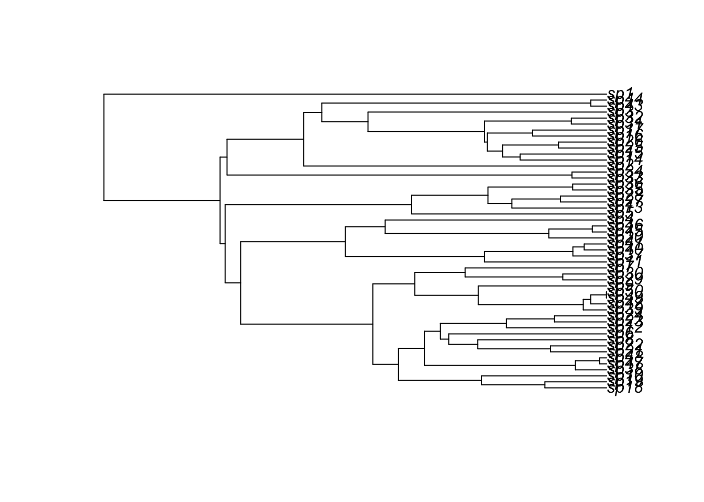
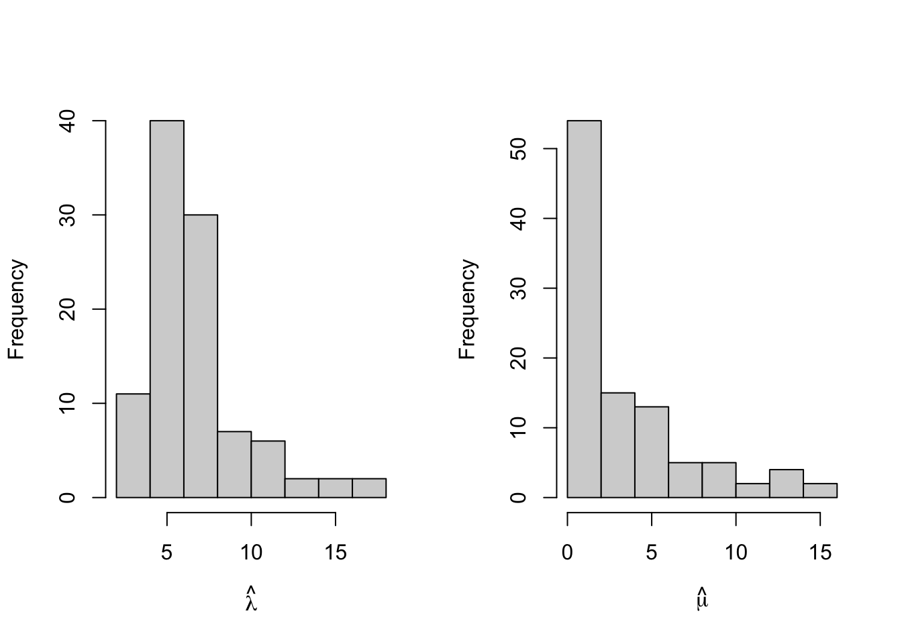

library(diversitree)Loading required package: apeSo far, we have been treating the trees as given without asking how they are created (by some biologist, presumably). If the traits we are interested in do not influence diversification, extinction/death, or the probability we observe a particular lineage, then the standard Markov models on trees seem sufficient. In some cases, traits might influence the process creating the phylogenetic relationships we observe, and we would like to detect these effects.
library(diversitree)Loading required package: apeIt is for this reason that we start by considering models for tree generation (sometimes called “tree priors” by people who use BEAST, which we will get to later in the week).
Let’s start by simulating some trees using birth-death models.
tree <- tree.bd(c(lambda=1, mu=0), max.taxa = 50)
plot(tree)
It doesn’t always work if mu>0. Let’s use the lapply function to generate a list of simulated outputs (lapply is like a for loop).
numtrees <- 50
treelist <- lapply(1:numtrees,
function(x) tree.bd(c(lambda=10, mu=5), max.taxa = 50)
)
dieoffs <- sapply(treelist, is.null)
numdieoffs <- sum(dieoffs)numtrees <- 50
treelist <- lapply(1:numtrees,
function(x) tree.bd(c(lambda=10, mu=5), max.taxa = 50)
)
dieoffs <- sapply(treelist, is.null)
numdieoffs <- sum(dieoffs)Sometimes we fail to generate a tree with max.taxa number of lineages because they all go extinct (this is stochastic). How many died off before reaching 50 taxa?
print(numdieoffs)[1] 30The parameter “lambda” is the birth/diversification rate, and the parameter “mu” is the mortality/extinction rate. Try different combinations of the parameters (try lambda = 20, 50, 100, and mu = 20, 50, 100). What do you notice about your simulations?
It might be conenient to write a function called “getnumdieoffs” that accepts lambda, mu, and numtaxa, and then spits out treelist. Then you can create another function that acts on treelist to return numdieoffs.
Organize the results of your simulations in a nice display.
Try to simulate trees with lambda = 1, mu = 2, and 10 taxa. How many simulations do you need to run until you start seeing trees with 10 taxa produced?
Use ?trees to examine the help page for some of other tree simulation models. You will notcie tree.bd and tree.yule toward the bottom. Use your investigative abilities to research the Yule process and compare it to the birth- death process.
Do you think that tree.yule(1, max.taxa=10) and tree.bd(lambda=2,mu=1, max.taxa=10) simulate the same process? Justify your answer.
Do you think that tree.yule(1, max.taxa=10) and tree.bd(lambda=1,mu=0, max.taxa=10) simulate the same process? Justify your answer.
The diversitree package can simulate tip data using Markov models for two discrete states initialized from a particular state at the root. One model is the “mk2” model: sim.character(tree, pars, x0=0, model=“mk2”, br=NULL) the “pars” argument is a vector of the form (q12,q21) corresponding to the transition rates of the stochastic rate matrix, Q (the model argument can also be set to “mkn” to simulate Markov models with n states). Compare sim.character with the simMk function from phytools. Confirm whether these two R functions simulate the same process.
Now that we have some familiarity with the behavior of the birth-death model, we will try to use the model for parameter inference, i.e. model fitting.
The diversitree package has a convenient class of functions that can be used to define likelihood functions for different models. We will start with the simplest case - the birth death model.
The diversitree package only works on ultrametric trees. Thus, we won’t be able to use these functions to understand our own datasets, but the properties of these models will prove useful for understanding more complicated phylodynamics models later.
Start by simulating a collection of birth death trees. The tree.bd function can simulate BiSSE, MuSSE, and other types of trees in addition to the basic birth-death model, but we will just start by using it to simulate the basic birth-death process in this demo.
To simulate a birth death model, we supply a diversification rate (lambda) and an extinction/death rate (mu). We can either specify tree.bd to simulate until a certain population size is reached (max.taxa) or to run for a specified amount of time (by changing max.taxa to max.t).
This will simulate a birth-death process until 20 species are produced (starting from a single individual species). Currently the diversification rate is set to lambda=5, and there is no extinction (mu=0).
The make.bd function is a convenient way to define a likelihood for the tree we simulate. It automatically knows that there is a diversification rate (lambda) and an extinction rate (mu).
tree <- tree.bd(c(lambda=5,mu=0), max.taxa = 20)
loglik <- make.bd(tree)The make.bd function is a scalar function of two variables of the form loglik = loglik(c(lambda,mu)). Typing loglik into the console will print some information about the model.
Let’s visualize the likelihood surface one parameter at a time (holding the other parameter at the true value).
#specify grids of values for the parameters:
lambdavals <- exp( seq(-3,3,length=30))
muvals <- exp( seq(-6,2,length=30))
#plot loglik in each variable while holding the other at the true value:
loglik_lambda_vals <- sapply(lambdavals, function(x) loglik(c(x,0)))
loglik_mu_vals <- sapply(muvals, function(x) loglik(c(5,x)))
loglik_max <- max(c(loglik_lambda_vals, loglik_mu_vals))
par(mfrow=c(2,1))
plot(lambdavals, loglik_lambda_vals, ylim=c(loglik_max-10,loglik_max+2),
xlab=bquote(lambda),ylab='log-likelihood',
main=expression('Holding '~mu~' at its true value'))
plot(muvals, loglik_mu_vals, ylim=c(loglik_max-10,loglik_max+2),
xlab=bquote(mu),ylab='log-likelihood',
main=expression('Holding '~lambda~' at its true value'))
We can easily maximize the loglik over \((\lambda, \mu)\) to obtain a maximum likelihood estimate (MLE):
mle <- find.mle(loglik, c(1,0), method='subplex')The find.mle function stores the MLE in mle$par, and the maximum log-likelihood is stored in . We can look at to see if the numerical method found a reasonable solution to the optimization problem:
print(mle$message)[1] "success! tolerance satisfied"print(mle$par) lambda mu
4.484412e+00 4.644587e-16 print(mle$lnLik)[1] 48.35119Are the estimates close to the values we used (\(\lambda=5, \mu-0\))?
The value of mle$lnLik in that particular run appears to be positive… hmm.
The maximum of the log-likelihood function roughly coincides with the parameters we used. How variable is this? Let’s simulate more trees. The make.bd function can be lapply’d to the treelist to give us a list of likelihood functions corresponding to our list of trees.
treelist <- trees(c(lambda=5,mu=0),
type=c("bd"), n=100,
max.taxa=20)
# make a log-likelihood function for each tree:
logliklist <- lapply(treelist, make.bd )What does the distribution of MLEs look like for this set of trees?
mles <- lapply(logliklist, function(x){find.mle(x, c(1,0), method='subplex')})
mles_pars <- t(sapply(mles, function(x) x$par))
par(mfrow=c(1,2))
hist(mles_pars[,1],main='',
xlab=bquote(hat(lambda)))
hist(mles_pars[,2],main='',
xlab=bquote(hat(mu)))
The estimates \(\hat{\lambda}\) seem to be close to the true value of \(\lambda=5\), but the extinction rate, which was \(\mu=0\), seems a little harder to pin down.
Remember that the true value of mu we used was mu=0. A lot of the models suggest values of \(\mu\) > 0, which might be interesting. Why might that be?
Use constrain(loglik, mu ~ 0) to create constrained log-likelihood functions, and fit them to obtain new estimates for lambda. How does the variance in \(\hat{\lambda}\) change?
The Generalized Likelihood Ratio Test is one way to assess whether \(\mu\) is significantly different from zero. The model with more parameters will always fit the data better, but it may not fit the data “that much” better. The GLR test looks a log(ratio of likelihoods) = difference(log-Likelihoods) to produce a test statistic (also, rather annoyingly in this case, called \(\lambda\)).
Use
constrain(loglik, mu ~ 0) to create the constrained log-likelihood functions, and fit them to obtain new estimates for lambda.
Then, use Wikipedia, Google, or your favorite AI companion to help you formulate GLR test statistics and assess significant departues from a null hypothesis of \(\mu=0\).
(Hint: the GLR test makes an asymptotic approximation. What is that approximation, and under what situations would it apply in this case?)
(Double hint: find.mle stores log-likelihood values in lnLik).
Consider a different hypothesis: \(\lambda > \mu\). Look at your estimates \(\hat{\lambda}\) and \(\hat{\mu}\) to see how often would you conclude that \(\lambda < \mu\).
If your simulation produced trees with estimated values of \(\hat{\lambda} < \hat{\mu}\), plot these trees and comment on any features they exhibit that stand out to you. If your simulation did not produce trees with MLEs having \(\hat{\lambda} < \hat{\mu}\), look at a friend’s computer to see if theirs did.
The find.mle function uses a variety of numerical optimization algorithms to find MLEs. There is also a function called that accepts a log-likelihood function, and initial parameter guess (x.init), and a number of iterations to run (nsteps). It also requires a ``tuning parameter’’ called w to help the MCMC routine work more efficiently.
Use the mcmc function with nsteps=1000 and w=c(2,1). Plot loglikelihood (“p”) against parameters to visualize profile log-likelihoods, and also plot lambda against mu. Comment on what you see, and discuss implications of correlations between lambda and mu. (Note: there are other mcmc routines besides this one in diversitree. If you have a favorit method, feel free to use it.)
Replace max.taxa with max.t in the tree.bd function to simulate trees for a fixed amount of time (with variable numbers of taxa), and then repeat Exercises 1-6. (Caution: injudicious choices of lambda and max.t can make your computer explode. Ctrl + c is useful (on Mac, anyway) for cancelling calculations in the Terminal.)